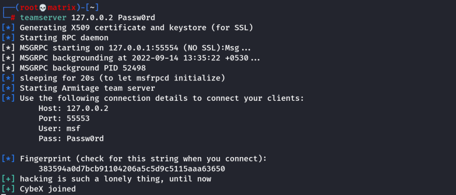
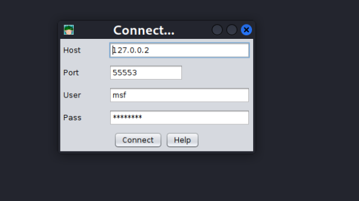

Common C2 Frameworks
Throughout your journey, you may encounter many different C2 Frameworks; we will discuss a few popular C2 Frameworks that are widely used by Red Teamers and Adversaries alike. We will be dividing this into two sections:
• Free
• Premium/Paid
You may ask some questions like “Why would I use a premium or paid C2 framework?”, and this is an excellent question. Premium/Paid C2 frameworks usually are less likely to be detected by Anti-Virus vendors. This is not to say that it's impossible to be detected, just that open-source C2 projects are generally well understood, and signatures can be easily be developed.
Usually, premium C2 frameworks generally have more advanced post-exploitation modules, pivoting features, and even feature requests that open-source software developers may sometimes not fulfill. For example, one feature Cobalt Strike offers that most other C2 frameworks do not is the ability to open a VPN tunnel from a beacon. This can be a fantastic feature if a Proxy does not work well in your specific situation. You must do your research to find out what will work best for your team.
Free C2 Frameworks
Metasploit
The Metasploit Framework, developed and maintained by Rapid7, is one of the most popular Exploitation and Post Exploitation frameworks (C2) that is publicly available and is installed on most penetration testing distributions.
Link: https://www.metasploit.com/
Armitage
Armitage is an extension of the Metasploit Framework - it adds a Graphical user interface and is written in Java, and is incredibly similar to Cobalt Strike. This is because they were both developed by Raphael Mudge. Armitage offers an easy way to enumerate and visualize all of your targets. Aside from looking a lot like Cobalt Strike, it even offers some unique features. One of the most popular can be found in the “Attacks” menu; This feature is known as the Hail Mary attack, which attempts to run all exploits for the services running on a specific workstation. Armitage really is “Fast and Easy Hacking”.
Link: https://web.archive.org/web/20211006153158/http://www.fastandeasyhacking.com/
Powershell Empire/Starkiller
Powershell Empire and Starkiller is another incredibly popular C2 originally created by Harmjoy, Sixdub, and Enigma0x3 from Veris Group. Currently, the project has been discontinued and has been picked up by the BC Security team (Cx01N, Hubbl3, and _Vinnybod). Empire features agents written in various languages compatible with multiple platforms, making it an incredibly versatile C2. For more information on Empire, we recommend you take a look at the Powershell Empire room.
Link: https://bc-security.gitbook.io/empire-wiki/
Link: https://github.com/BC-SECURITY/Starkiller
Link: https://tryhackme.com/room/rppsempire
Covenant
Covenant by Ryan Cobb is the last free C2 Framework we will be covering - By far, it is one of the most unique C2 Frameworks being written in C#. Unlike Metasploit/Armitage, It’s primarily used for post-exploitation and lateral movement with HTTP, HTTPS, and SMB listeners with highly customizable agents.
Link: https://github.com/cobbr/Covenant
Sliver
Sliver by Bishop Fox is an advanced, highly customizable multi-user, CLI-based C2 framework. Sliver is written in Go, which makes reverse engineering the C2 "implants" incredibly difficult. It supports various protocols for C2 communications like WireGuard, mTLS, HTTP(S), DNS, and much more. Additionally, it supports BOF files for additional functionality, DNS Canary Domains for masking C2 communications, automatic Let's Encrypt certificate generation for HTTPS beacons, and much more.
Link: https://github.com/BishopFox/sliver
Paid C2 Frameworks
Cobalt Strike
Cobalt Strike by Help Systems (Formerly created by Raphael Mudge) is arguably one of the most famous Command and Control frameworks next to Metasploit. Much like Artimage, it is written in Java and designed to be as flexible as possible. For more information, see Cobalt Strike’s Video Training Page. It offers additional insight into both Red Team Operations and the Framework by Raphael Mudge himself.
Link: https://www.cobaltstrike.com/
Link: https://www.youtube.com/playlist?list=PLcjpg2ik7YT6H5l9Jx-1ooRYpfvznAInJ
Brute Ratel
Brute Ratel by Chetan Nayak or Paranoid Ninja is a Command and Control framework marketed as a “Customizable Command and Control Center” or “C4” framework that provides a true adversary simulation-like experience with being a unique C2 framework. For more information about the Framework, the author has provided a Video Training Page that demonstrates many of the capabilities within the framework.
Link: https://bruteratel.com/
Link: https://bruteratel.com/tabs/tutorials/
Other C2 Frameworks
For a more comprehensive list of C2 Frameworks and their capabilities, check out the “C2 Matrix”, a project maintained by Jorge Orchilles and Bryson Bort. It has a far more comprehensive list of almost all C2 Frameworks that are currently available. We highly recommend that after this room, you go check it out and explore some of the other C2 Frameworks that were not discussed in this room.
Miscellaneous
Setting Up Armitage:
Follow the Room's Task 4 for Github Based Manual Installation.
However, we can install in Kali Linux using apt install armitage
Binaries that will be used: teamserver & armitage
1. Once Installtion is complete, Start the Postgresql service
systemctl start postgresql && systemctl status postgresql
2. Initialize the metasploit database.
In the room, it is asked to initialize the database using non-root user. However, this doesn't works.
Thus as root run
msfdb delete
msfdb init
3. Start Teamserver:
teamserver 127.0.0.2 Passw0rd
Note: It is recommended to use internal IP for C2 server.

4. Start Armitage and connect with the details provided in the teamserver interface.

6. Finally Enter a Nickname.
Note: When operating a C2 Framework, you never want to expose the management interface publicly; You should always listen on a local interface, never a public-facing one. This complicates access for fellow operators. Fortunately, there is an easy solution for this. For operators to gain access to the server, you should create a new user account for them and enable SSH access on the server, and they will be able to SSH port forward TCP/55553. Armitage explicitly denies users listening on 127.0.0.1; this is because it is essentially a shared Metasploit server with a "Deconfliction Server" that when multiple users are connecting to the server, you're not seeing everything that your other users are seeing. With Armitage, you must listen on your tun0/eth0 IP Address.